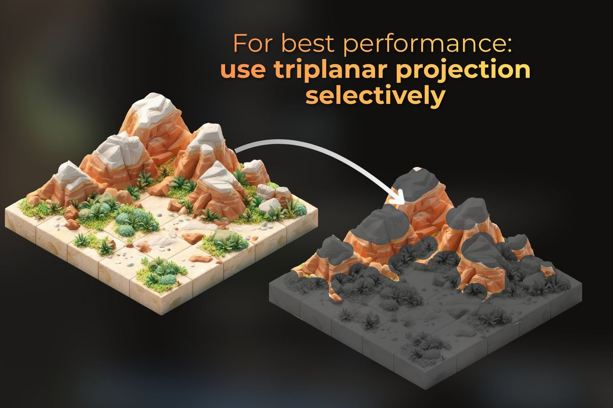

Triplanarの計算負荷への対応策として、面の向きに応じてplanar projection（地面など上向きの面）とbiplanar projection（建物など横向きの面）を選択的に使い分けるという手法。
URL
https://www.linkedin.com/feed/update/urn:li:activity:7483813488113389568/

Triplanarの計算負荷への対応策として、面の向きに応じてplanar projection（地面など上向きの面）とbiplanar projection（建物など横向きの面）を選択的に使い分けるという手法。